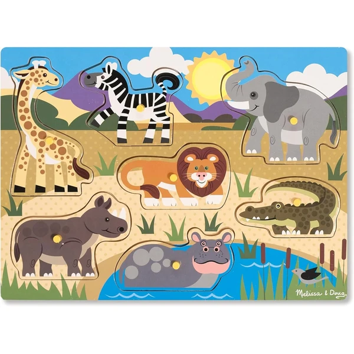
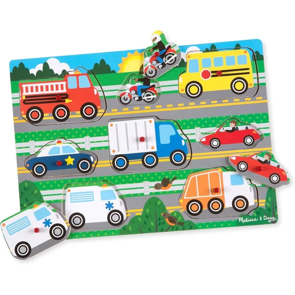
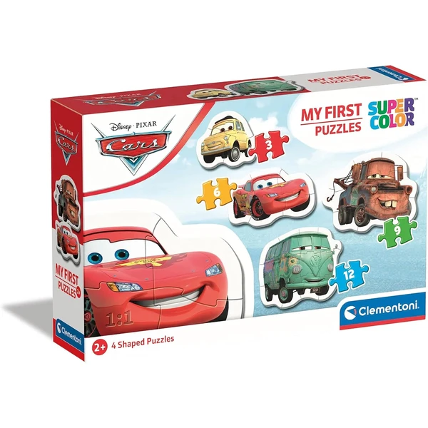
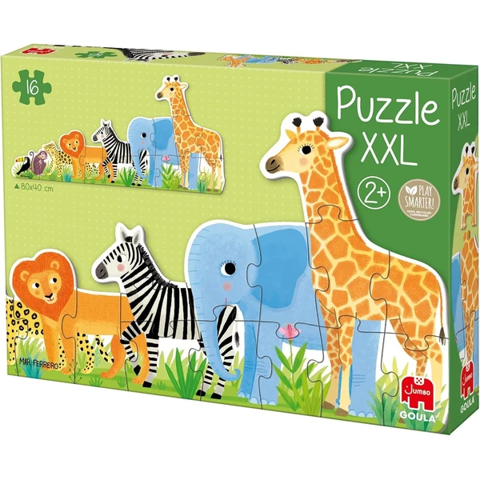
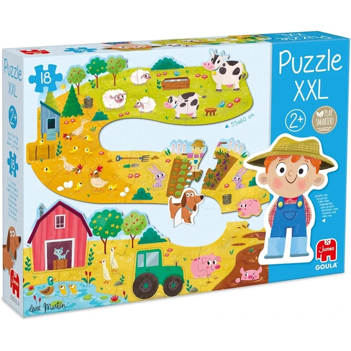
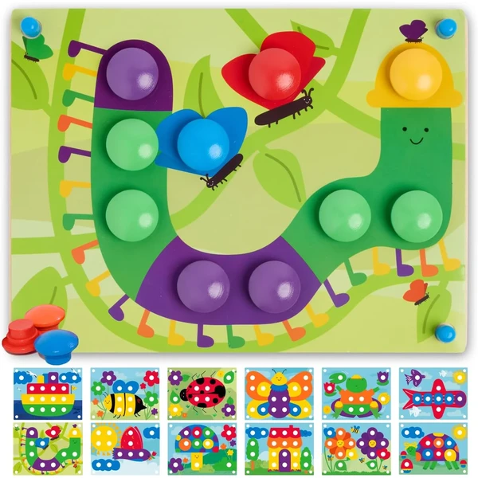

Puzzle de madera Safari Melissa & Doug
Un puzzle de madera de siete piezas con clavijas y forma de animales del safari (jirafa, león, rinoceronte...), sobre un tablero con escena ilustrada.
⭐ ¿Por qué nos gusta?
- ✔ Siete piezas con clavijas fáciles de agarrar.
- ✔ Escena ilustrada como guía visual.
- ✔ Mismo formato que el resto de la colección Melissa & Doug.
💬 Lo que más destacan las familias
Lo que más suele gustar es lo fácil que resulta para los peques agarrar las piezas gracias a las clavijas, algo que ayuda mucho al principio. También se valora la escena ilustrada de fondo, que sirve de pista para saber dónde va cada animal.
Ver en Amazon

Puzzle de madera vehículos Melissa & Doug
Un puzzle de madera de ocho piezas con clavijas y forma de vehículos (coche de policía, ambulancia...), sobre un tablero con escena ilustrada que ayuda a identificar cada figura.
⭐ ¿Por qué nos gusta?
- ✔ Ocho piezas con clavijas fáciles de agarrar.
- ✔ Escena ilustrada como guía visual.
- ✔ Madera resistente de alta calidad.
💬 Lo que más destacan las familias
Muchos padres coinciden en que es un buen puzzle para iniciarse, con piezas que aguantan bien el uso diario sin romperse. También gusta que la escena de fondo ayude al niño a identificar cada vehículo antes de encajarlo.
Ver en Amazon

Puzzle progresivo Cars Clementoni
Un set de cuatro puzzles de dificultad progresiva (3, 6, 9 y 12 piezas) con la temática de Cars, pensado para acompañar el progreso del niño con los puzzles.
⭐ ¿Por qué nos gusta?
- ✔ Cuatro niveles de dificultad en un mismo set.
- ✔ Piezas troqueladas resistentes.
- ✔ Pensado para iniciarse en los puzzles.
💬 Lo que más destacan las familias
Una de las cosas más comentadas es que sirve durante mucho tiempo, porque el niño puede ir subiendo de nivel sin necesidad de otro puzzle. También se valora que las piezas aguanten bien los primeros intentos, cuando todavía cuesta encajar con precisión.
Ver en Amazon

Puzzle XXL selva Goula
Un puzzle de cartón de dieciséis piezas gigantes con animales de la selva ordenados de menor a mayor tamaño.
⭐ ¿Por qué nos gusta?
- ✔ Dieciséis piezas gigantes, fáciles de manejar.
- ✔ Animales ordenados por tamaño.
- ✔ Cartón resistente.
💬 Lo que más destacan las familias
Los compradores valoran especialmente que las piezas grandes sean mucho más manejables para las manos pequeñas que un puzzle convencional. A los niños les suele gustar además ir ordenando los animales de menor a mayor tamaño.
Ver en Amazon

Puzzle XXL granja Goula
Un puzzle de cartón de diecisiete piezas gigantes que forma un camino de granja, con dos figuras incluidas para jugar una vez montado.
⭐ ¿Por qué nos gusta?
- ✔ Diecisiete piezas gigantes tipo camino.
- ✔ Incluye dos figuras para jugar después.
- ✔ Mismo formato que el puzzle de la selva de esta lista.
💬 Lo que más destacan las familias
Entre los comentarios más habituales aparece que las piezas gigantes resultan cómodas de encajar incluso para los que recién empiezan con los puzzles. También gusta que, una vez montado, las figuras incluidas den pie a seguir jugando.
Ver en Amazon

Mosaico de botones de madera Nene Toys
Un puzzle Montessori de madera con botones grandes de colores y tarjetas ilustradas para emparejar, pensado para trabajar la motricidad fina.
⭐ ¿Por qué nos gusta?
- ✔ Botones grandes de madera, fáciles de agarrar.
- ✔ Tarjetas ilustradas para emparejar colores.
- ✔ Madera con pintura al agua no tóxica.
💬 Lo que más destacan las familias
Se repite bastante el comentario de que la madera aguanta mejor el uso diario que las versiones de plástico. A los niños les suele encantar emparejar los colores de los botones con las tarjetas ilustradas.
Ver en Amazon